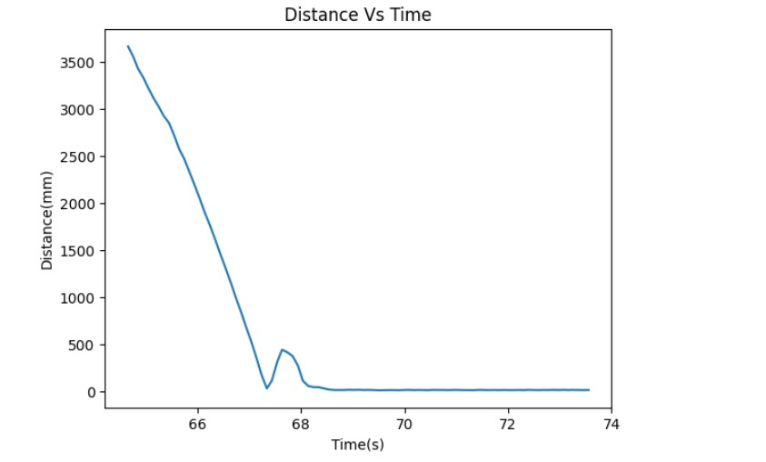
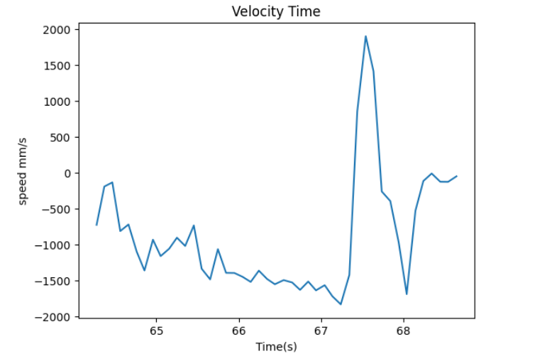
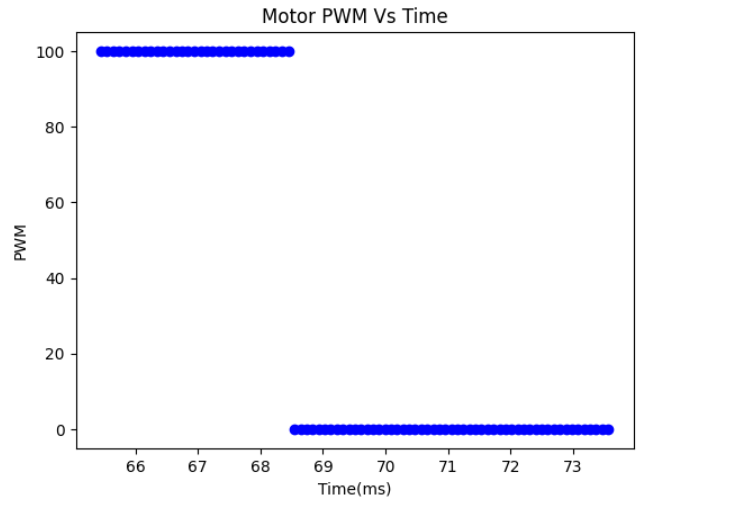
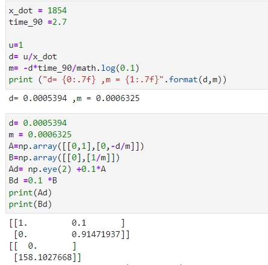
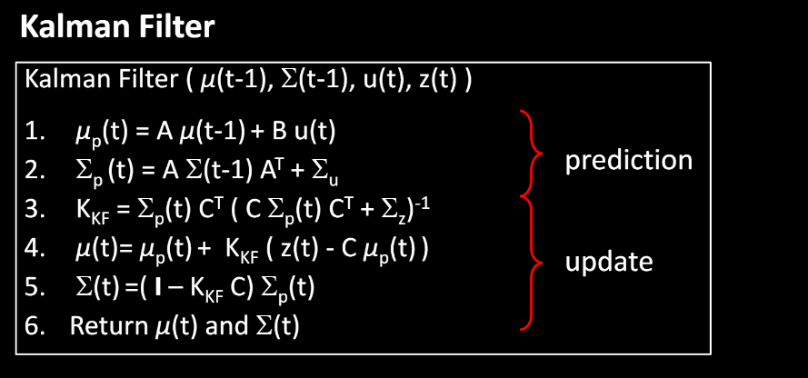
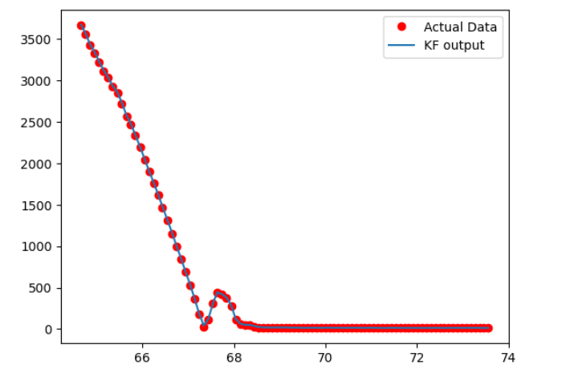
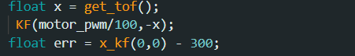
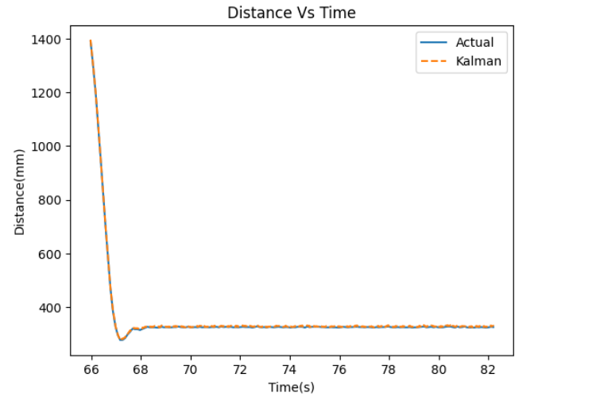

Lab 7 aims to employ a Kalman filter with the goal of accelerating the control loop achieved through PID in Lab 6.
To estimate the drag and momentum terms before implementing the Kalman filter, a step response was utilized to calculate the A and B matrices. The step size chosen for this purpose was 100, which is equivalent to the maximum PWM value generated during the PID control in Lab 6. To ensure that the robot had adequate time to reach a steady state, it was initiated at a distance of approximately 4 meters.Here is the testing video :
It should be noted that the bump observed in the distance vs. time graph is a result of the robot colliding with the wall and rebounding.
  Based on the plots, it can be inferred that the robot achieves a steady state at approximately 4.3 seconds, with a steady state velocity of around 1833 mm/s. The 90% rise time for the system is approximately 1.8 seconds, indicating that x_dot = 1907 and t_90 = 3.4. The A ,B Ad and Bd matrix 's calculation are shown below:
The image presented in the lecture slides illustrates the operation of the Kalman Filter. In order to utilize the Kalman Filter, several parameters must be specified in the workflow. This includes the matrices A, B, and C, which are required to generate the state space equation, as well as the noise matrices sigma_u and sigma_z.
The following code is used to initialize the filter and Implement the Filter:
The C matrix has been set to [-1,0] since the TOF sensor measures the distance from the wall as a negative value when the robot is at state 0. Additionally, the state vector x is initialized as the negative value of the initial TOF reading.
Then noise covariance matrices are specified. Process noise sigma_u is dependent on sampling rate. The two standard deviations sigma1 and sigma2 reflects the trust in modeled position and speed respectively, and a diagonal matrix is used because we assume they are uncorrelated.The values for sigma and sigma_u were chosen to be the same as those presented in the lecture. For sigma_z which represents measurement noise. I choose the sigma_z = 25 to get the best result of the filter The reault of the filter is shown below:
Once multiple tests were conducted to confirm that the Kalman Filter was functioning as expected in Jupyter, the next step was to integrate the filter into the PID controller used in Lab 6 on the Artemis. This involved adapting the Python code used in Jupyter to C. The PID value remained the same as in Lab 6, but instead of using the detected distance directly to calculate the error, the filtered distance estimate obtained from the Kalman Filter was utilized.
The code Implemented on the robot is shown below:
To implement a Kalman filter in my PID controller, I will calculate the error using the Kalman filter instead of using the TOF data. The change for this lab, which is different from Lab 6, is shown below:
In order to improve the Kalman filter's accuracy, the value of sigma has been recalculated using the real sample rate and adjusted to 31.6. The video below show the robot running the PID with Kalman filter
From the plot below, it is evident that the Kalman filter output closely tracks the actual time-of-flight distance, albeit with a slight deviation.
